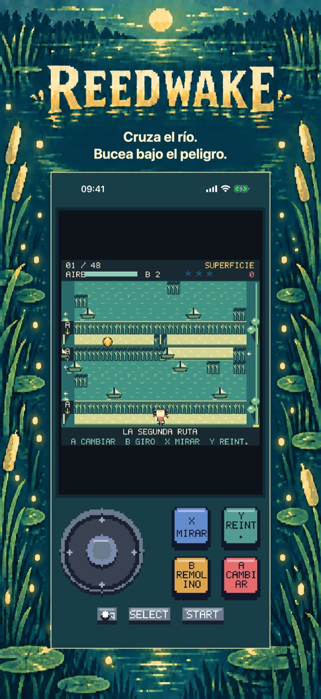
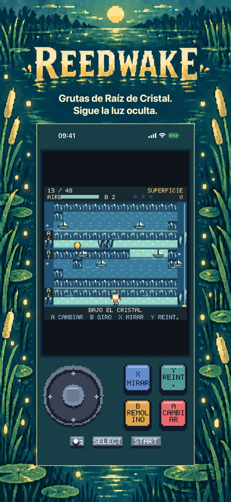
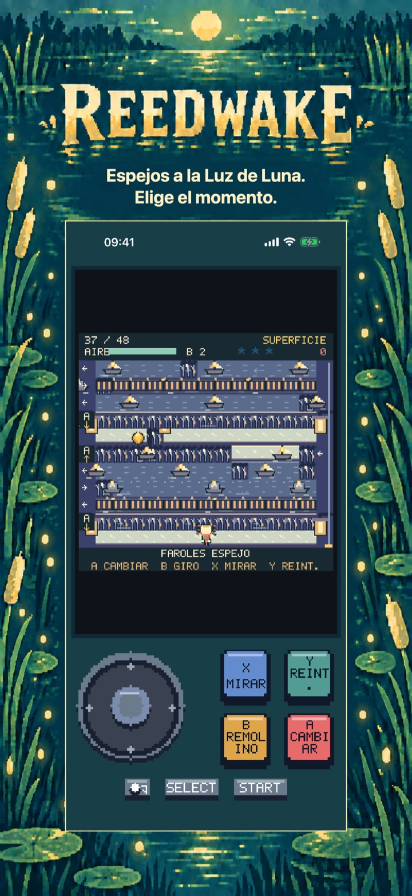
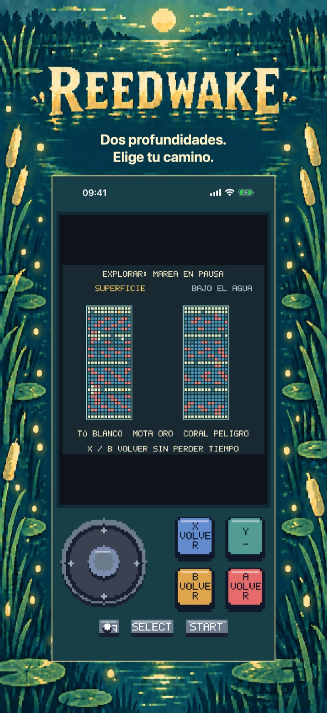
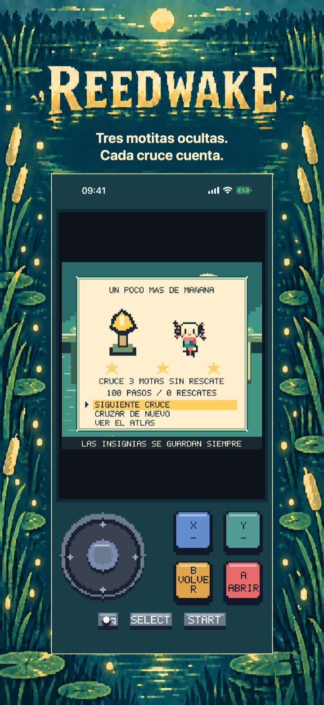
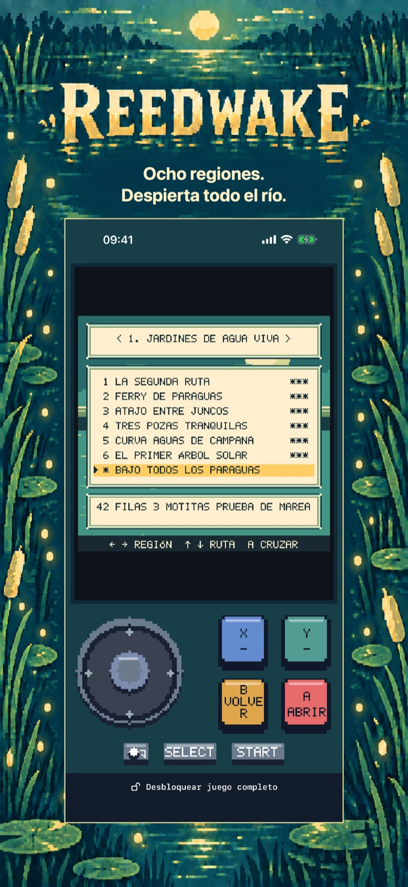

Reedwake: Aventura fluvial
Reedwake: Aventura fluvial
Dos profundidades y un río por despertar. Cruza corrientes, bucea bajo los peligros y devuelve la luz a ocho árboles solares. Prueba seis cruces gratis.
Próximamente en el App Store
Los seis primeros cruces de historia de Jardines de Agua Viva se pueden jugar gratis.

El viaje
Cruza el río en dos capas de profundidad
X explora ambas capas sin perder tiempo. START pausa. En ajustes puedes elegir ritmo tranquilo y movimiento reducido. El atlas tiene 48 rutas de historia y ocho pruebas de marea opcionales.
Regiones
Pruebas de marea
Capas de profundidad
Empieza con una región inicial completa
Jardines de Agua Viva: los seis primeros cruces de historia.
Los seis primeros cruces de historia de Jardines de Agua Viva se pueden jugar gratis.
Continúa el viaje de Nim
Desbloquea siete regiones más, otros 42 cruces de historia, las ocho pruebas de marea y la historia completa con su final.
Pago único · Sin anuncios · Sin suscripción
Precio base en España: 3,99 €; Apple establece los precios en otros escaparates.
Reedwake: Aventura fluvial
Bucea, esquiva, despierta
Despierta el río, cruce a cruce.
Guía a Nim en una aventura fluvial de arte píxel con dos capas que explorar. Salta entre obstáculos móviles en la superficie, bucea bajo el trajín y busca lugares seguros para respirar. Las bóvedas de raíces y los bancos poco profundos impiden usar una capa como atajo: observa el río, elige el momento y cambia de profundidad.
UNA CAMPANA PEQUEÑA QUE CAMBIA TODO Usa la campana de remolino para detener los peligros durante unos instantes. Inspecciona ambas capas con el tiempo en pausa y prepara tu siguiente movimiento. El ritmo tranquilo ralentiza la acción sin reducir las recompensas y conserva sus propios récords.
OCHO REGIONES POR ILUMINAR El juego completo incluye 48 cruces de historia en ocho regiones y ocho pruebas de marea opcionales. Recoge tres motitas por ruta, consigue hasta 168 insignias, conoce a los guardianes del río y restaura sus ocho árboles solares. Los rescates en puntos de control te ayudan a intentarlo de nuevo y el guardado local recuerda tu viaje.
UN CAPÍTULO INICIAL COMPLETO Y GRATIS Juega gratis los seis cruces de los Jardines de Agua Viva. Una única compra permanente de Juego completo desbloquea las otras siete regiones, los 42 cruces de historia restantes, las ocho pruebas de marea y toda la historia con su final. Sin anuncios, suscripciones, consumibles ni reintentos de pago. Los ajustes, la inspección y el ritmo tranquilo siguen disponibles en la parte gratuita. Puedes restaurar compras y compartir la compra con En familia.
JUEGA A TU MANERA Alterna entre la palanca analógica y la cruceta en pantalla. Usa los cuatro botones de acción, un mando compatible o un teclado físico. Juega en español, inglés, francés, alemán o italiano. No necesitas una cuenta: el progreso y los ajustes se guardan en tu dispositivo.
Dentro del juego
Dentro del juego
Las seis vistas muestran el viaje por el río en orden: mecánica principal, dos regiones nuevas, un puzle más profundo, un cruce resuelto y el atlas.
Bucea bajo el peligro.

Sigue la luz oculta.

Elige el momento.

Elige tu camino.

Cada cruce cuenta.

Despierta todo el río.
Ayuda y soporte
¿Tienes dudas sobre Reedwake?
Encuentra respuestas prácticas sobre los controles, el progreso guardado, el capítulo gratuito y la compra del juego completo.
¿Cómo muevo a Nim?
La guía del juego explica el movimiento, los cambios de profundidad y los peligros de los cruces. Usa el control de movimiento para avanzar casilla a casilla; la acción A cambia de capa cuando la ruta lo permite.
La cruceta mueve a Nim una casilla por pulso. Mantén una dirección para seguir saltando. Llega al árbol solar de la otra orilla. No hay cuenta atrás ni límite de vidas.
A permite sumergirse o subir. Los techos de raíces bloquean arriba; los bajos, abajo. Busca aberturas y cambia de capa ANTES de cruzar. Las flechas A junto a las vías indican la capa abierta.
¿Dónde se guarda mi progreso?
El progreso de los cruces, las insignias y los ajustes se guardan localmente en este dispositivo. Reedwake no requiere una cuenta. Al borrar la app se eliminan los datos locales, sujeto a las copias de seguridad normales del sistema operativo.
¿Qué puedo jugar gratis?
Jardines de Agua Viva: los seis primeros cruces de historia.
¿Qué desbloquea la compra del juego completo?
Desbloquea siete regiones más, otros 42 cruces de historia, las ocho pruebas de marea y la historia completa con su final.
Pago único · Sin anuncios · Sin suscripción Precio base en España: 3,99 €; Apple establece los precios en otros escaparates.
¿Cómo restauro una compra?
Abre la pantalla de compra del juego completo y selecciona Restaurar compras.
La compra está pendiente o la tienda no está disponible. ¿Qué hago?
Una compra pendiente espera autorización o que se complete; puedes seguir jugando el capítulo gratuito y volver a comprobarlo más tarde. Si la tienda no carga, revisa la conexión e inténtalo de nuevo. Una compra o restauración verificada desbloquea el juego completo y conserva tu progreso.
Contactar con soporte
Haz una pregunta o comunica un problema. Incluye el nombre del juego, tu dispositivo y qué ocurrió.
Contacta con nosotros en GitHubLos informes son públicos y requieren una cuenta de GitHub.